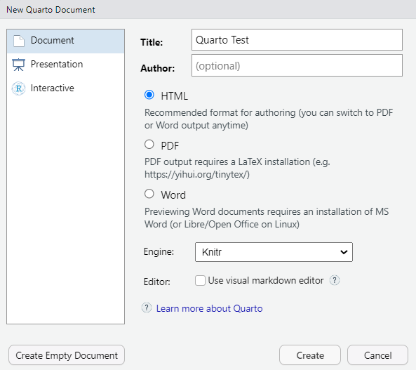
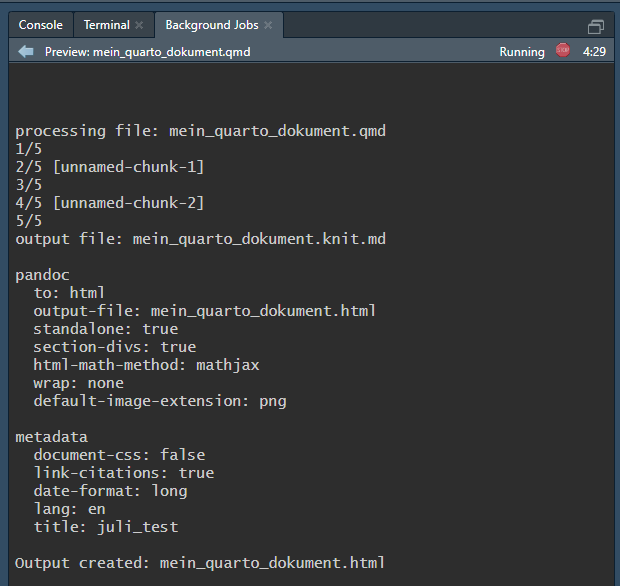

1 Setup
Wenn ihr dieses Quarto-Dokument auf eurem Rechner rendern lassen wollt, braucht ihr drei Dinge: R, Quarto, und am besten auch RStudio. Da Quarto an keine Sprache und keinen Editor gebunden ist, könnt ihr Quarto auch mit anderen Sprachen (z.B. Python) und/oder Editoren (z.B. Visual Studio Code) nutzen, aber meine Beispiele werden sich auf R und RStudio beziehen.
R könnt ihr hier downloaden. Bitte updated R, solltet ihr eine Version haben, die unter 4.0 liegt (ihr könnt eure R-Version herausfinden, indem ihr R.version in eurer R-Konsole ausführt). Wenn ihr unsicher seid, wie ihr R am besten updated (oder Angst habt, dabei etwas kaputt zu machen), schreibt mir einfach eine Mail. Schnappt euch am besten auch eine aktuelle Version von RStudio.
Dann fehlt euch noch Quarto - das muss ebenfalls separat installiert werden. Das könnt ihr hier tun.
Um zu testen, ob die Installation geklappt hat, öffnet RStudio und erstellt ein neues Quarto-Dokument (File → New File → Quarto Document… - siehe Figure 1.1). Ihr könnt eurem Dokument einen Titel geben und ein Output-Format wählen (es gibt mehr Output-Formate, als hier aufgeführt sind). Am besten wählt ihr erst mal html - das ist am einfachsten. PDF benötigt z.B. weitere Tools wie eine \(\LaTeX\)-Installation. Knitr als Engine sollte standardmäßig ausgewählt sein - das ist auch richtig so. Bei euch ist vermutlich der Haken für den visual Editor gesetzt, den ich nicht so gerne benutze (den ihr aber bestimmt mögen werdet).1 Clickt auf “create”, und los geht’s. Es kann sein, dass euch RStudio jetzt oder spätestens wenn ihr euer neues Quarto-Dokument rendern wollt bitten wird, die neuste Version von markdown zu installieren. Einfach zustimmen, das ist richtig so!

Es sollt sich jetzt ein neues Dokument geöffnet haben, das bereits etwas Text und Code enthält - perfekt um zu testen, ob alles läuft. Oben in der Leiste findet ihr den Render-Button mit einem kleinen blauen Pfeil (siehe Figure 1.2). Den klickt ihr - nun wird euch RStudio erst mal bitten, eurer Datei einen Namen zu geben (vorhin habt ihr nur den Titel eingegeben, nicht den Dateinamen).
Danach wird Quarto losrendern, was ihr daran seht, dass sich kurz (da wo sonst eure R-Konsole ist) ein Reiter namens “Background Jobs” öffnet, in dem der Fortschritt angezeigt wird (siehe Figure 1.3).

Wenn alles geklappt hat, wird euch vermutlich eine Vorschau eures Dokuments im Viewer-Panel von RStudio angezeigt.2 Diese könnt ihr euch mittels des kleinen Buttons oben im Viewer in einem neuen Fenster anzeigen lassen. Es ist allerdings auch eine .html-Datei im selben Ordner wie euer Quarto-Dokument (d.h. idealerweise im selben Ordner wie euer aktuelles R-Projekt, siehe dieser Artikel zum project-oriented Workflow in R). Diese könnt ihr einfach doppelt anklicken, und eure fertig gerenderte Datei wird sich in eurem Browser öffnen. Wenn das alles geklappt hat, kann es losgehen mit eurem ersten eigenen Quarto-Dokument!
1.0.1 Verwendete packages
Im Verlauf dieses Dokuments werde ich eine Reihe zusätzlicher R-packages verwenden, die mir dabei helfen werden, Grafiken, Tabellen und Ergebnisse statistischer Tests in Quarto aufzuhübschen. Diese habe ich bewusst nicht in einer lokalen Library wie z.B. renv (siehe Workshop) eingefügt, denn: Wenn ihr Quarto nutzen wollt, werdet ihr sicherlich auch diese packages öfter mal brauchen, daher installiert sie einfach einmal, damit ihr sie in jedem eurer R-Projekte zur Verfügung habt. Hier ein Liste der packages, die ich verwende, in ihren jeweiligen Versionen (ggf. mit Installationshinweisen, wenn sie “spezieller” sind). Im Verlauf des Tutorials werde ich an den jeweiligen Stellen aber auch erklären, welche Funktionen der jeweiligen packages ich gerade verwende.
# Hier die Liste der verwendeten packages. Wenn ihr das jeweilige Paket nicht
# installiert habt, lasst einfach die jeweilige Zeile zur installation laufen.
# Im Kommentar hinter jedem package findet ihr die verwendete Version, die ich
# zum Zeitpunkt der Erstellung dieses Tutorials verwendet habe. Installiert
# aber bitte einfach immer die neuste verfügbare Version - das sollte keinen
# Unterschied machen. Und falls doch, schreibt mir eine Mail, dann passe ich
# das Tutorial an :-)
install.packages("kableExtra") # 1.3.41.0.2 Wie ihr dieses Tutorial verwendet
Am besten erstellt ihr euch ein eigenes Quarto-Dokument und versucht, die für euch relevanten Punkte nachzumachen. Ich zeige euch an den jeweiligen Stellen, wie der dazugehörige Code aussieht, aber ihr könnt natürlich auch in die Quarto-Dateien schauen, mit denen dieses Tutorial erstellt wurde. Wundert euch nicht, wenn der Code für dieses Tutorial allerdings etwas wilder aussieht - es handelt sich hier um ein “Quarto Book”, das in den Details etwas anders funktioniert als ein Quarto-Dokument (z.B. wie man das Projekt aufsetzt und wie man es rendert, siehe Quarto-Dokumentation). Versucht daher für den Anfang lieber nicht, dieses Tutorial zu rendern, wie es ist, sondern arbeitet in eurem eigenen “normalen” Quarto-Dokument.
Der Visual-Editor bietet euch viele komfortable Vorteile. Ihr könnt z.B. per Klick Bilder oder Referenzen einfügen, Text formatieren etc. - ganz ähnlich, wie das in Text-Editoren wie Word läuft. Ich persönlich verwende lieber den “hässlicheren” Source-Editor, der diese Optionen nicht hat (der zeigt euch nur den “rohen” Code an). Der Grund ist, dass der Wechsel zwischen Source und Visual Editor manchmal Dinge im Code verändert. Zum Beispiel werden zwei Sätze, die ich im Code in zwei Zeilen gepackt hatte, durch den Visual Editor manchmal in eine einzige Zeile gepackt. Das hat für das Output-Dokument (in diesem Fall) überhaupt keine Konsequenzen, aber ich mag dieses Verhalten nicht. (Das übrigens keine böse Absicht ist - es ist nur ein sehr schwierig zu lösendes Programmierproblem.)↩︎
Je nachdem, wie ihr arbeitet (wenn ihr z.B. wie ich manchmal auf einem Server eures Instituts unterwegs seid), kann es passieren, dass im Background-Job davon die Rede ist, dass der Server (bzw. der localhost) nicht gefunden wurde, und es erscheint nichts im Viewer. Das macht aber gar nichts. Quarto würde euch gerne die Datei über einen sogenannten localhost anzeigen, aber selbst wenn das nicht klappt, wurde trotzdem ziemlich sicher eure Datei so generiert, wie sie sollte. Diese ist im selben Ordner wie euer Quarto-Dokument erschienen, und ihr könnt sie einfach per Doppelklick öffnen, wenn sie nicht automatisch angezeigt wird.↩︎